Modélisation de base de données
Quand avons nous besoin d'une base de données et inversement ?
Pas de base de données

Base de données
2 types de base de données
SQL VS NoSQL
SQL = Structure Query Language
Super pour les projets déjà bien défini et structurés
NoSQL = Not Only Structure Query Language
Super pour les projets en lancement
La méthode MERISE
MCD -> MLD -> MPD
MCD (Modélisation conceptuel de données)
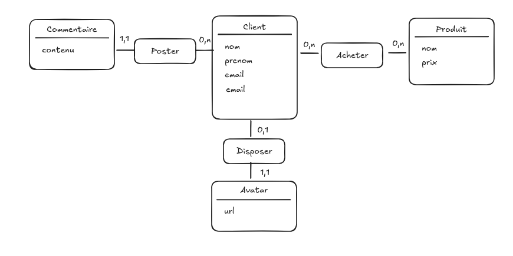Entité et Attributs
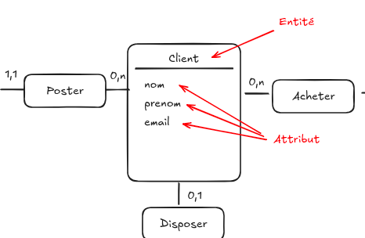Association et cardinalités
Association = Verbe à l'infinitif
Cardinalité = 0 (zéro), 1 (un) et n (plusieurs)
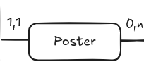Pas de "n"
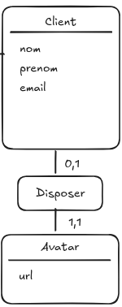Un Client dispose de 0 ou 1 Avatar
Un Avatar est disposé par 1 ou 1 Client
Un "n" d'un seul côté
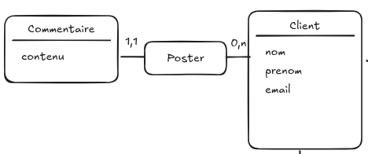Un Client poste 0 ou n Commentaire
Un Commentaire est posté par 1 Client
"n" de chaque côté
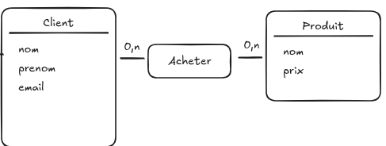Un Client achète 1 ou n Produit
Un Produit est achetéé par 1 ou n Client
MLD (Modélisation logique de données)
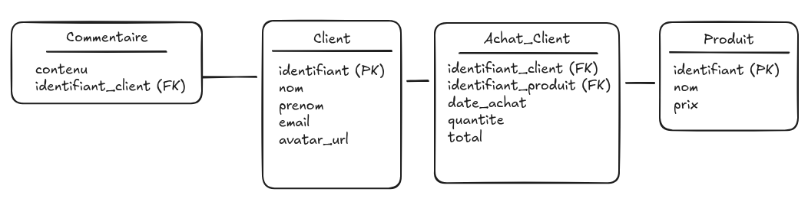Que s'est-il passé ?
pas de "n" = fusion des entités
un "n" d'un côté = ajout d'une clé étrangère
un "n" de chaque côté = création d'une table de liaison
Pas de "n"
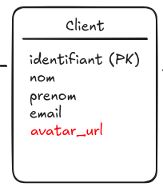Un "n" d'un côté
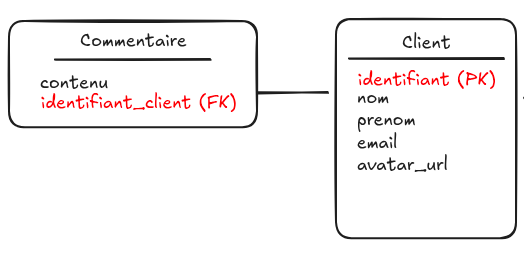PK = Clé primaire
FK = Clé étrangère
Un "n" de chaque côté
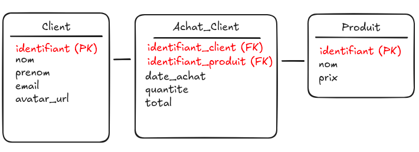MPD (Modélisation physique de données)
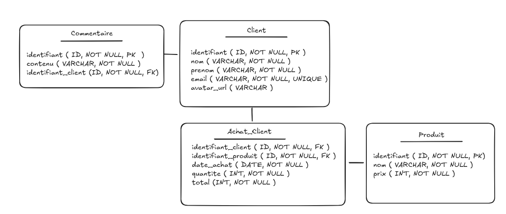Les types :
INT, VARCHAR, DATE, TEXT, etc.
Les contraintes :
PRIMARY KEY, FOREIGN KEY, NOT NULL, UNIQUE, …
Présenter son MCD/MLD/MPD